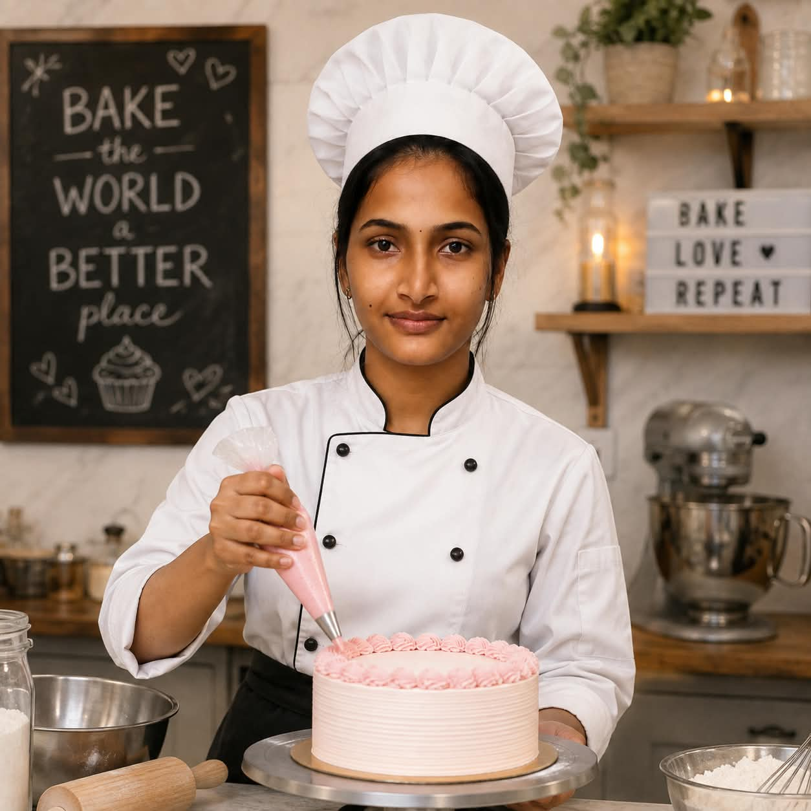
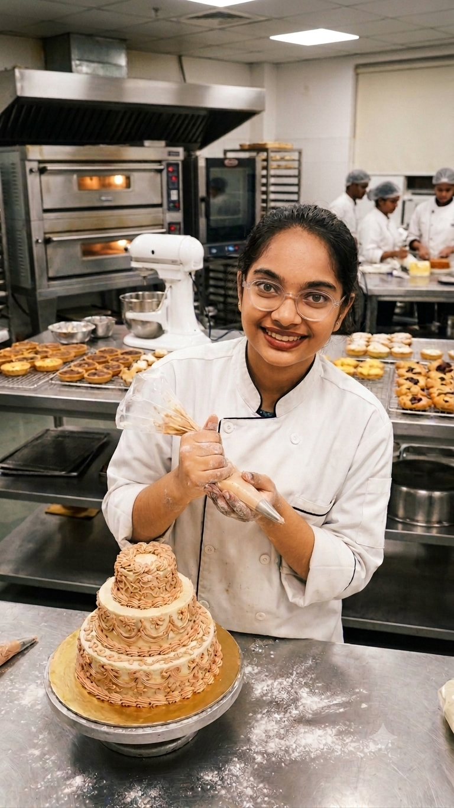
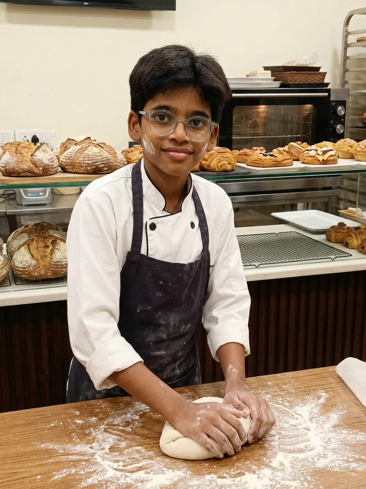

THE HANDS BEHIND EVERY BAKE
Passion, creativity and years of experience come together to create every delicious treat we serve.
OUR CRAFT
Behind every beautiful cake, delicate pastry and freshly baked loaf is a skilled baker who puts patience, creativity and care into their craft.

HEAD CHEF
Chef LAHARI is our head chef with more than 12 years of experience in professional baking. She specializes in celebration cakes, wedding cakes and creative custom designs.

PASTRY CHEF
Chef BHAVISHYA is our talented pastry chef who brings creativity and elegance to every dessert. She specializes in pastries, desserts and beautifully crafted sweet treats.

BAKER & BREAD SPECIALIST
Chef NIKHIL is passionate about traditional baking techniques and freshly baked breads. He specializes in artisan breads, savouries and freshly baked bakery favourites.